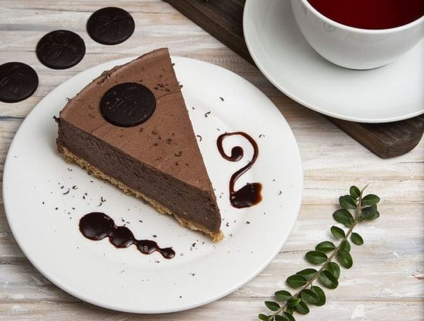
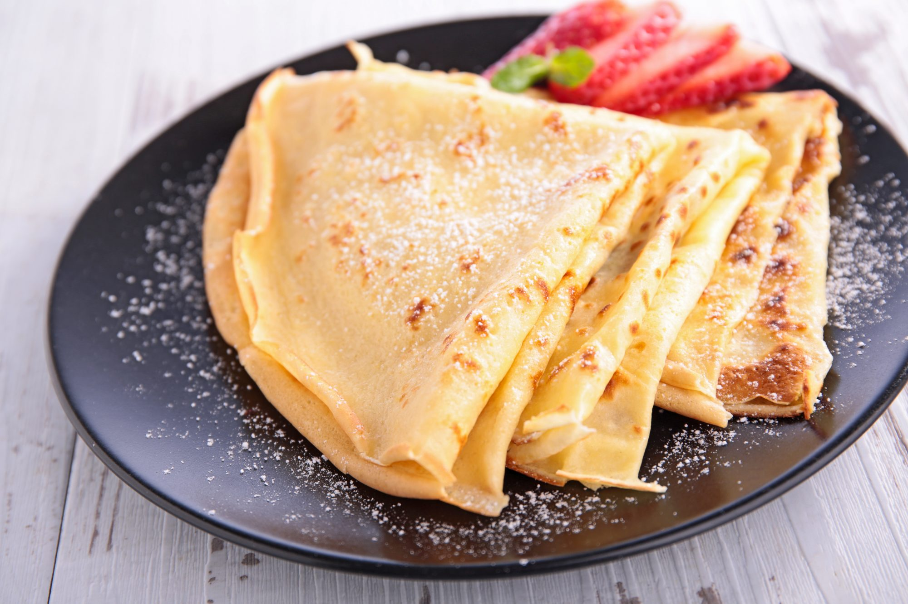

recetas
Tarta De Chocolate

Tarta de chocolate SIN HORNO (fácil y ligera)
Ingredientes:
1 huevo
70 g de mantequilla
120 g de chocolate fondant
120 g de chocolate con leche
1 cucharadita de azúcar avainillado
3 hojas de gelatina
75 ml de agua
200 ml de nata para montar
Cómo hacer tarta de chocolate sin horno
Preparamos la base de la tarta
-Trituramos las galletas. Derretimos la mantequilla en el microondas y la mezclamos con el huevo. Añadimos esto a las galletas y mezclamos bien hasta obtener una masa homogénea.
-Colocamos esta mezcla de galletas en la base de un molde desmontable, presionando con ayuda de una cuchara. Metemos en el microondas a máxima potencia unos 3 minutos.
Hacemos el relleno de chocolate
-Y ahora vamos a preparar el resto. Ponemos los dos chocolates en un cazo al baño maría, los troceamos ya que así se fundirán de forma más fácil. Una vez que está fundido le añadimos la cucharadita de azúcar avainillado.
-Las hojas de gelatina las ponemos en remojo en agua fría. Cuando han perdido su rigidez las escurrimos y disolvemos en los 75 ml de agua que hemos calentado en el microondas. Lo añadimos, el agua con la gelatina disuelta, al chocolate y mezclamos bien. Reservamos fuera del fuego para que se vaya templando.
-Montamos la nata. Mezclamos con el chocolate con movimientos envolventes.Montamos la tarta de chocolate
-Vertemos esta mezcla sobre la base de galletas. Guardamos en el frigorífico, al menos 4 horas, aunque lo mejor es hacerlo el día antes.
-Desmoldamos y servimos, se puede decorar con un par de fresas y unas hojas de menta.
¡Ya solo nos queda disfrutar de esta deliciosa tarta sin horno con chocolate!.
Crepas dulces

ingredientes
-2 tazas de harina de trigo regular, sin preparars
-2 cucharadas de azúcars
-6 huevoss
-1 cucharadita de vainillas
-3 tazas de leches
-4 cucharadas de mantequilla derretida s
(o se puede derretir en la sartén que va a utilizar para los crepes - ver más en las instrucciones) - también puede usar aceites
Sugerencias para el relleno de las crepas:s
Fruta fresca: fresas: (frutillas moras, frambuesas, banano, mango, etc)s
Dulce de leches
Nutellla o la marca de su preferencia de crema de chocolate y avellanass
Salsa casera de fresas o mermeladas/compotas de frutas a su gustos
Azúcar / Miel de abejas
Helado de vainillas
Preparación
-1-Ponga la harina, los huevos, el azúcar, la vainilla, y 1 taza de leche en un tazón grande
-2-Utilice un batidor de mano, una batidora eléctrica, una licuadora normal o de inmersión para combinar y mezclar todos los ingredientes hasta que tenga una masa suaves
-3-Añada las 2 tazas restantes de leche y mezcle hasta que la masa quede sin grumos. Si esta preparando la masa de las crepas de antemano en este momento se puede refrigerar hasta el momento de cocinar las crepas. Se agrega la mantequilla derretida y se vuelve a mezclar (con una cuchara) justo al empezar a cocinarlas.s
-4-En la sartén que va a utilizar para los crepes o crepas, derrita la mantequilla a fuego lento. A continuación, vierta la mantequilla derretida en un tazón pequeño y deje que se enfríe un poco. Luego agrega esta mantequilla a la masa de las crepas y mezcle bien. Su sartén quedará engrasada y lista para cocinar la primera crepa.s
-5-Caliente la sartén a fuego medio. Cada estufa y sartén son diferentes, así que cada quien tiene que encontrar el nivel ideal de la temperatura. Generalmente, para una estufa de gas es entre el 50% y el 75% del máximo.s
-6-Use una cuchara sopera grande (o media taza de medir) para verter la masa en la sartén con una mano, mientras sostiene la sartén con la otra mano, luego rápidamente vaya inclinando la sartén los lados para que la masa de la crepa quede distribuida en toda la superficie plana de la sartén.s
-7-Se cocina el primer lado de la crepa durante aproximadamente un minuto o hasta que los bordes de la crepa se empiezan a dorar. Use una espátula plana para verificar y voltear la crepa. Deslice la espátula plana suavemente debajo de la crepa, voltéela (use su mano con cuidado si es necesario para ayudar a darle vuelta) y cocínela en el otro lado durante unos 15 a 25 segundos. Retire la crepa de la sartén y póngala en un plato. Repita el proceso hasta que haya terminado con toda la masa.s
-8-Las crepas se pueden servir inmediatamente con su elección de rellenos.